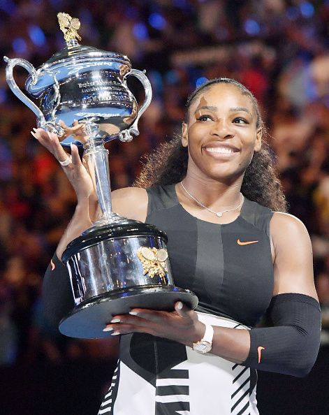
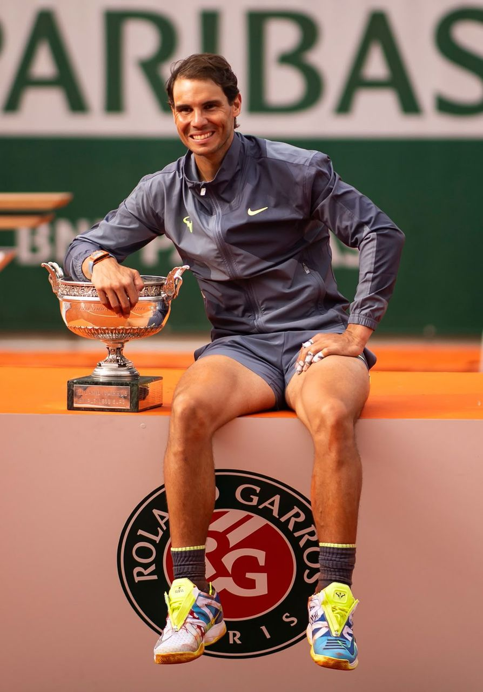
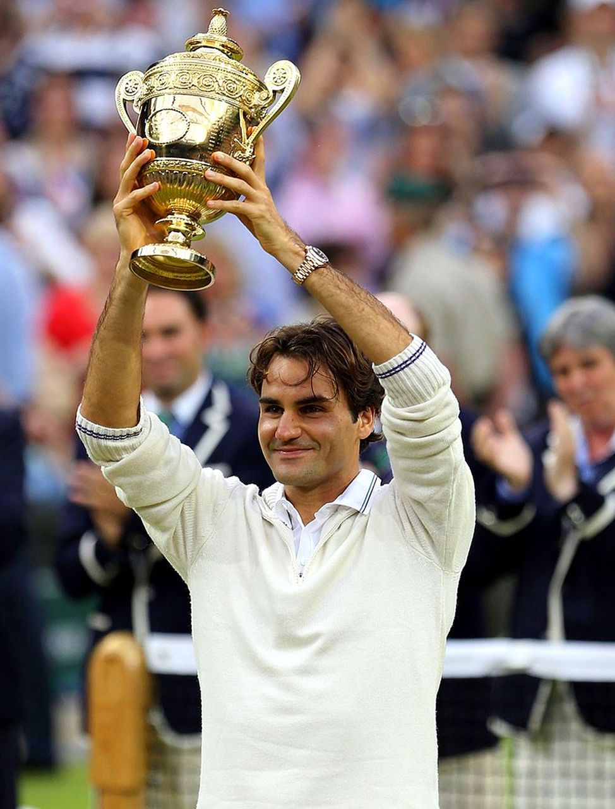
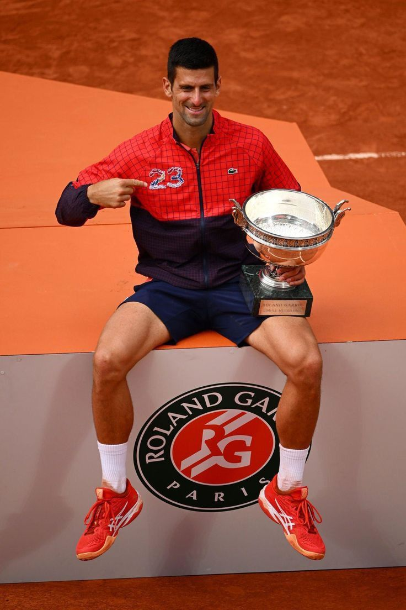

LE TENNIS EST L'UN DES SPORTS PROFESSIONNELS LES PLUS MEDIATISES, ET DE TRES NOMBREUX CHAMPIONS SE SONT ILLUSTRES DEPUIS LES ORIGINES DE LA DISCIPLINE. CERTAINS L'ONT MARQUE PAR LE NOMBRE DE TITRES QU'ILS ONT REMPORTES OU PAR LEURS VICTOIRES DANS LES TOURNOIS DITS « MAJEURS »
PARMI EUX ON PEUT CITER:
Serena Williams est une joueuse de tennis professionnelle américaine, considérée comme l'une des plus grandes athlètes de tous les temps, avec un palmarès exceptionnel comprenant 23 titres du Grand Chelem en simple et 14 en double.
Serena Williams est née le 26 septembre 1981 à Saginaw, dans le Michigan. Elle a commencé le tennis très jeune, entraînée par son père Richard Williams aux côtés de sa sœur Venus. Dès son entrée sur le circuit professionnel en 1995, elle s’est imposée comme une joueuse hors norme grâce à sa puissance, sa vitesse et son mental exceptionnel. Elle a remporté 23 titres du Grand Chelem en simple, ce qui fait d’elle la joueuse la plus titrée de l’ère Open. À cela s’ajoutent 14 titres du Grand Chelem en double, tous remportés avec Venus, ainsi que quatre médailles d’or olympiques.
Sa carrière a été marquée par des rivalités mémorables. Avec sa sœur Venus, elle a disputé plusieurs finales de Grand Chelem, transformant leurs duels en événements historiques. Elle a également affronté Maria Sharapova dans des matchs très médiatisés, qu’elle a largement dominés. Ses confrontations contre des joueuses comme Justine Henin ou Victoria Azarenka ont aussi marqué l’histoire du tennis féminin. Ces rivalités ont contribué à populariser le tennis et à attirer un public plus large.
À seulement 17 ans, Serena remporte son premier titre du Grand Chelem en battant Martina Hingis en finale. Ce succès marque le début de son ascension fulgurante et fait d’elle la première Afro-Américaine à gagner l’US Open depuis Althea Gibson en 1958.
Serena bat sa sœur Venus Williams en finale, décrochant son premier titre à Wimbledon. Ce match symbolise la domination des sœurs Williams sur le tennis féminin du début des années 2000.
Après une période difficile marquée par les blessures et les critiques, Serena revient au sommet en écrasant Maria Sharapova en finale (6-1, 6-2). Ce match est considéré comme l’un des plus impressionnants de sa carrière, démontrant sa force mentale et physique.
Après une grave blessure et une embolie pulmonaire en 2011, Serena revient et remporte Wimbledon en battant Agnieszka Radwańska. Ce titre est vu comme une preuve de sa résilience et de sa capacité à surmonter les obstacles.
Serena bat Venus en finale et décroche son 23e titre du Grand Chelem, dépassant Steffi Graf dans l’ère Open. Ce match est historique car il consolide son statut de légende vivante du tennis.

Serena Williams a eu un impact profond sur le tennis et au-delà. Elle a brisé de nombreuses barrières en tant que femme noire dans un sport historiquement dominé par des joueurs blancs. Son style de jeu puissant et agressif a redéfini les normes du tennis féminin, inspirant une nouvelle génération de joueuses. En dehors du court, elle est également une militante pour l’égalité des sexes et la justice sociale, utilisant sa plateforme pour défendre des causes importantes. Son héritage perdurera longtemps, non seulement pour ses exploits sportifs, mais aussi pour son influence culturelle et sociale.
Rafael Nadal est l'un des plus grands joueurs de tennis de tous les temps, célèbre pour sa domination sur terre battue et ses 22 titres du Grand Chelem, ayant mis fin à sa carrière professionnelle en 2024 avec un palmarès exceptionnel
Rafael Nadal Parera est né le 3 juin 1986 à Manacor, sur l'île de Majorque, en Espagne. Issu d'une famille sportive, il a été entraîné dès son plus jeune âge par son oncle Toni Nadal. Dès l’âge de trois ans, Rafael pratique le tennis, abandonnant tôt le football pour se consacrer pleinement à ce sport.
Nadal devient professionnel en 2001 et s’impose rapidement parmi les meilleurs joueurs du circuit ATP. Il atteint le deuxième rang mondial et remporte 16 titres avant l’âge de 20 ans, démontrant un talent précoce exceptionnel.
Nadal est réputé pour son style de jeu agressif et sa capacité à exceller sur terre battue. Son revers à une main, sa puissance et son endurance font de lui un adversaire redoutable. Il est également connu pour son mental de fer et sa détermination sur le court.

Rafael Nadal est largement respecté pour son humilité, sa sportivité et son engagement envers des causes caritatives. Il a reçu de nombreuses distinctions, dont le prix Laureus du meilleur sportif mondial à plusieurs reprises. En dehors du tennis, il est également impliqué dans des œuvres de charité à travers sa fondation, qui soutient l’éducation et le développement des jeunes défavorisés.
En 2024, confronté à de nombreuses blessures récurrentes et au syndrome de Müller-Weiss, Nadal décide de mettre un terme à sa carrière professionnelle après la finale de la Coupe Davis, bouclant ainsi 23 ans de carrière . Son dernier Grand Chelem remporté est Roland-Garros 2022, symbolisant son immense succès sur terre battue . Le 19 juin 2025, il est créé marquis de Llevant de Majorque par le roi Felipe VI, honorant sa carrière et ses exploits
Roger Federer est considéré comme l’un des plus grands joueurs de tennis de tous les temps, avec 20 titres du Grand Chelem et 103 victoires ATP, ayant dominé le tennis mondial pendant plus de deux décennies.
Roger Federer est né le 8 août 1981 à Bâle, en Suisse. Il a débuté sa carrière professionnelle en 1998 et a rapidement gagné en renommée grâce à son style de jeu élégant et à sa capacité à performer sur tous les terrains.
Roger Federer devient rapidement l’un des joueurs dominants du circuit ATP. Il est sacré numéro 1 mondial pendant 310 semaines, dont un record de 237 semaines consécutives . Il a remporté 20 tournois du Grand Chelem : 6 à l’Open d’Australie, 8 à Wimbledon, 1 à Roland-Garros et 5 à l'US Open, ainsi que 103 titres ATP en simple et 8 en double . Ses succès incluent 6 Masters, 28 Masters 1000 et une médaille d’or en double avec Stan Wawrinka aux Jeux olympiques de Pékin en 2008, ainsi qu’une médaille d’argent en simple à Londres 2012 . Il remporte également la Coupe Davis avec la Suisse en 2014.
Federer a accompli un Grand Chelem en carrière sur quatre surfaces différentes et détient le record de huit titres à Wimbledon et de cinq titres à l'US Open, partagés avec Jimmy Connors et Pete Sampras . Il a marqué l’histoire par sa régularité, atteignant 36 quarts de finale consécutifs en Grand Chelem et disputant au moins cinq fois la finale de trois des quatre tournois majeurs .
Federer est réputé pour son style de jeu fluide, sa technique impeccable et sa polyvalence sur toutes les surfaces. Il est considéré comme un modèle de fair-play et de sportivité, ayant reçu le prix Stefan Edberg du joueur le plus fair-play à 13 reprises . Son influence sur le tennis est immense, inspirant de nombreux joueurs et contribuant à populariser le sport à l’échelle mondiale. En septembre 2022, il annonce sa retraite du tennis professionnel après le Laver Cup, marquant la fin d’une ère pour l’un des plus grands champions de tous les temps.
En 2026, Federer sera intronisé au Hall of Fame du tennis à Newport, reconnaissance ultime de sa carrière exceptionnelle . Il vaut également d’être mentionné qu’en 2024, l’Association internationale de la presse sportive (AIPS) l’a élu cinquième plus grand athlète masculin du siècle, aux côtés de légendes telles que Muhammad Ali et Usain Bolt.
Roger Federer reste une icône du tennis mondial, admiré pour ses exploits, sa régularité phénoménale, sa technique parfaite et son rôle inspirant hors des courts, consolidant son statut de légende du sport.
Federer a eu des rivalités épiques avec Rafael Nadal et Novak Djokovic, qui ont marqué l’histoire du tennis. Ses confrontations avec Nadal, notamment à Wimbledon 2008 et à l’Open d’Australie 2017, sont considérées comme parmi les plus grands matchs de tous les temps. Sa rivalité avec Djokovic a également produit des rencontres mémorables, notamment la finale de Wimbledon 2019, qui est souvent citée comme l’un des meilleurs matchs de tennis jamais joués.

Novak Djokovic est un joueur de tennis professionnel serbe considéré comme l'un des plus grands joueurs de l'histoire du tennis, avec un nombre record de titres du Grand Chelem et une polyvalence exceptionnelle sur toutes les surfaces.
Novak Djokovic est né le 22 mars 1987 à Belgrade, en Serbie. Il a commencé à jouer au tennis à l'âge de 7 ans et a rapidement montré un talent exceptionnel. Il a remporté plusieurs tournois juniors avant de passer professionnellement en 2003.
Djokovic est devenu professionnel en 2003 et a rapidement gravi les échelons du tennis mondial. Il fait partie du trio légendaire surnommé le "Big Three", aux côtés de Roger Federer et Rafael Nadal. Il est reconnu pour sa flexibilité, son agilité, sa constance depuis la ligne de fond et sa résistance mentale, ce qui lui permet d'exceller sur toutes les surfaces, en particulier le dur et le gazon.
Djokovic est réputé pour son jeu de fond de court solide, sa capacité à retourner les services puissants et sa résilience mentale. Il est également connu pour son sens de l'humour et son engagement envers des causes caritatives, notamment à travers sa fondation qui soutient l'éducation des enfants défavorisés en Serbie.
Novak Djokovic continue de concourir au plus haut niveau dans le tennis international et reste une figure centrale dans les discussions sur les plus grands joueurs de tous les temps. Il participe aux principaux tournois ATP et Grand Chelem et s'intéresse parfois à représenter la Serbie en Coupe Davis ou aux Jeux Olympiques. Sa carrière est marquée non seulement par ses titres et records, mais aussi par sa longévité, son professionnalisme et son influence sur la nouvelle génération de joueurs.

IL EXISTE DE NOMBREUX JOUEURS DANS L'HISTOIRE DU TENNIS, TELS QUE PETE SAMPRAS, BJÖRN BORG, ANDRE AGASSI, STEFFI GRAF, MARTINA NAVRATILOVA, CHRIS EVERT ET BIEN D'AUTRES. CHACUN DE CES JOUEURS A CONTRIBUÉ À FAÇONNER LE SPORT À SA MANIÈRE ET A LAISSÉ UNE EMPRUNTE INDELÉBILE DANS L'histoire DU TENNIS.